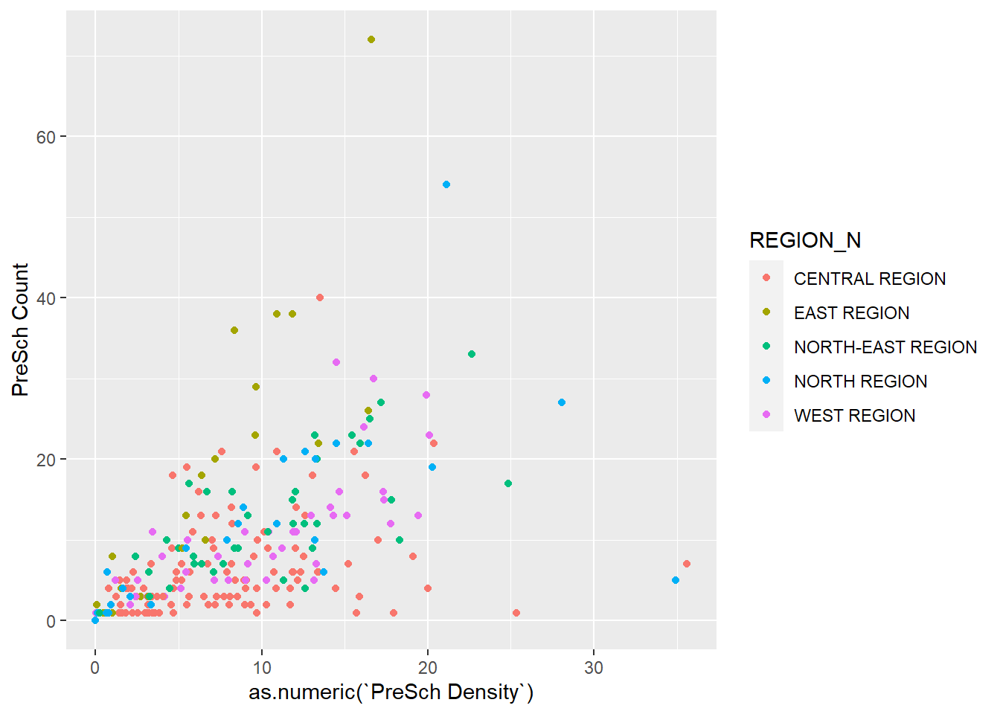

pacman::p_load(sf, tidyverse)Exercise 01 ‘Geospatial Data Science with R’
(Copied from Exercise) Learning Outcome:
- installing and loading sf and tidyverse packages into R environment,
- importing geospatial data by using appropriate functions of sf package,
- importing aspatial data by using appropriate function of readr package,
- exploring the content of simple feature data frame by using appropriate Base R and sf functions,
- assigning or transforming coordinate systems by using using appropriate sf functions,
- converting an aspatial data into a sf data frame by using appropriate function of sf package,
- performing geoprocessing tasks by using appropriate functions of sf package,
- performing data wrangling tasks by using appropriate functions of dplyr package and
- performing Exploratory Data Analysis (EDA) by using appropriate functions from ggplot2 package.
1 Import packages
2 Import data
The data used in this assignment is acquired from publicly available sources:
- Master Plan 2014 Subzone Boundary (Web) from data.gov.sg
- Pre-Schools Location from data.gov.sg
- Cycling Path from LTADataMall
- Latest version of Singapore Airbnb listing data from Inside Airbnb
# Singapore Master Plan 2014 Subzone Boundary (polygon feature)
mpsz <- st_read(dsn = "data/geospatial/MasterPlan2014SubzoneBoundaryWebSHP",
layer = "MP14_SUBZONE_WEB_PL")
# Singapore Cycling Paths (line feature)
cyclingpath <- st_read(dsn="data/geospatial/CyclingPath_Jul2024",
layer = "CyclingPathGazette")
# Singapore Preschool Locations (point feature)
preschool <- st_read("data/geospatial/PreSchoolsLocation.kml")
# The above files are read as different geometry-type data frames (as a 'simple feature')
# Airbnb Listing Data (aspatial, but contains coordinate attributes)
airbnb_listings <- read_csv("data/aspatial/listings.csv",
show_col_types = FALSE)
# The above file is read as a data frame.3 Read geometry data
Retrieve Geometry List
# Retrieve geometry list to see detailed information
st_geometry(mpsz)Geometry set for 323 features
Geometry type: MULTIPOLYGON
Dimension: XY
Bounding box: xmin: 2667.538 ymin: 15748.72 xmax: 56396.44 ymax: 50256.33
Projected CRS: SVY21
First 5 geometries:MULTIPOLYGON (((31495.56 30140.01, 31980.96 296...MULTIPOLYGON (((29092.28 30021.89, 29119.64 300...MULTIPOLYGON (((29932.33 29879.12, 29947.32 298...MULTIPOLYGON (((27131.28 30059.73, 27088.33 297...MULTIPOLYGON (((26451.03 30396.46, 26440.47 303...#alternatively, use mpsz$geom or mpsz[[1]]
# Output:
# Geometry set for 323 features
# Geometry type: MULTIPOLYGON
# Dimension: XY
# Bounding box: xmin: 2667.538 ymin: 15748.72 xmax: 56396.44 ymax: 50256.33
# Projected CRS: SVY21
# First 5 geometries:...Show data type of each attribute/field
# Retrieve data type of every attribute in the data frame
glimpse(mpsz)Rows: 323
Columns: 16
$ OBJECTID <int> 1, 2, 3, 4, 5, 6, 7, 8, 9, 10, 11, 12, 13, 14, 15, 16, 17, …
$ SUBZONE_NO <int> 1, 1, 3, 8, 3, 7, 9, 2, 13, 7, 12, 6, 1, 5, 1, 1, 3, 2, 2, …
$ SUBZONE_N <chr> "MARINA SOUTH", "PEARL'S HILL", "BOAT QUAY", "HENDERSON HIL…
$ SUBZONE_C <chr> "MSSZ01", "OTSZ01", "SRSZ03", "BMSZ08", "BMSZ03", "BMSZ07",…
$ CA_IND <chr> "Y", "Y", "Y", "N", "N", "N", "N", "Y", "N", "N", "N", "N",…
$ PLN_AREA_N <chr> "MARINA SOUTH", "OUTRAM", "SINGAPORE RIVER", "BUKIT MERAH",…
$ PLN_AREA_C <chr> "MS", "OT", "SR", "BM", "BM", "BM", "BM", "SR", "QT", "QT",…
$ REGION_N <chr> "CENTRAL REGION", "CENTRAL REGION", "CENTRAL REGION", "CENT…
$ REGION_C <chr> "CR", "CR", "CR", "CR", "CR", "CR", "CR", "CR", "CR", "CR",…
$ INC_CRC <chr> "5ED7EB253F99252E", "8C7149B9EB32EEFC", "C35FEFF02B13E0E5",…
$ FMEL_UPD_D <date> 2014-12-05, 2014-12-05, 2014-12-05, 2014-12-05, 2014-12-05…
$ X_ADDR <dbl> 31595.84, 28679.06, 29654.96, 26782.83, 26201.96, 25358.82,…
$ Y_ADDR <dbl> 29220.19, 29782.05, 29974.66, 29933.77, 30005.70, 29991.38,…
$ SHAPE_Leng <dbl> 5267.381, 3506.107, 1740.926, 3313.625, 2825.594, 4428.913,…
$ SHAPE_Area <dbl> 1630379.27, 559816.25, 160807.50, 595428.89, 387429.44, 103…
$ geometry <MULTIPOLYGON [m]> MULTIPOLYGON (((31495.56 30..., MULTIPOLYGON (…# Rows: 323
# Columns: 16
# $ OBJECTID <int> 1, 2, 3, 4, 5, 6, 7, 8, 9, 10, 11, 12, 13…
# $ SUBZONE_NO <int> 1, 1, 3, 8, 3, 7, 9, 2, 13, 7, 12, 6, 1, …
# $ SUBZONE_N <chr> "MARINA SOUTH", "PEARL'S HILL", "BOAT QUA…
# $ SUBZONE_C <chr> "MSSZ01", "OTSZ01", "SRSZ03", "BMSZ08", "…
# $ CA_IND <chr> "Y", "Y", "Y", "N", "N", "N", "N", "Y", "…
# $ PLN_AREA_N <chr> "MARINA SOUTH", "OUTRAM", "SINGAPORE RIVE…
# $ PLN_AREA_C <chr> "MS", "OT", "SR", "BM", "BM", "BM", "BM",…
# $ REGION_N <chr> "CENTRAL REGION", "CENTRAL REGION", "CENT…
# $ REGION_C <chr> "CR", "CR", "CR", "CR", "CR", "CR", "CR",…
# $ INC_CRC <chr> "5ED7EB253F99252E", "8C7149B9EB32EEFC", "…
# $ FMEL_UPD_D <date> 2014-12-05, 2014-12-05, 2014-12-05, 2014…
# $ X_ADDR <dbl> 31595.84, 28679.06, 29654.96, 26782.83, 2…
# $ Y_ADDR <dbl> 29220.19, 29782.05, 29974.66, 29933.77, 3…
# $ SHAPE_Leng <dbl> 5267.381, 3506.107, 1740.926, 3313.625, 2…
# $ SHAPE_Area <dbl> 1630379.3, 559816.2, 160807.5, 595428.9, …
# $ geometry <MULTIPOLYGON [m]> MULTIPOLYGON (((31495.56 30.…Show first n rows of data frame
head(mpsz, n=5)Simple feature collection with 5 features and 15 fields
Geometry type: MULTIPOLYGON
Dimension: XY
Bounding box: xmin: 25867.68 ymin: 28369.47 xmax: 32362.39 ymax: 30435.54
Projected CRS: SVY21
OBJECTID SUBZONE_NO SUBZONE_N SUBZONE_C CA_IND PLN_AREA_N
1 1 1 MARINA SOUTH MSSZ01 Y MARINA SOUTH
2 2 1 PEARL'S HILL OTSZ01 Y OUTRAM
3 3 3 BOAT QUAY SRSZ03 Y SINGAPORE RIVER
4 4 8 HENDERSON HILL BMSZ08 N BUKIT MERAH
5 5 3 REDHILL BMSZ03 N BUKIT MERAH
PLN_AREA_C REGION_N REGION_C INC_CRC FMEL_UPD_D X_ADDR
1 MS CENTRAL REGION CR 5ED7EB253F99252E 2014-12-05 31595.84
2 OT CENTRAL REGION CR 8C7149B9EB32EEFC 2014-12-05 28679.06
3 SR CENTRAL REGION CR C35FEFF02B13E0E5 2014-12-05 29654.96
4 BM CENTRAL REGION CR 3775D82C5DDBEFBD 2014-12-05 26782.83
5 BM CENTRAL REGION CR 85D9ABEF0A40678F 2014-12-05 26201.96
Y_ADDR SHAPE_Leng SHAPE_Area geometry
1 29220.19 5267.381 1630379.3 MULTIPOLYGON (((31495.56 30...
2 29782.05 3506.107 559816.2 MULTIPOLYGON (((29092.28 30...
3 29974.66 1740.926 160807.5 MULTIPOLYGON (((29932.33 29...
4 29933.77 3313.625 595428.9 MULTIPOLYGON (((27131.28 30...
5 30005.70 2825.594 387429.4 MULTIPOLYGON (((26451.03 30...4 Plot Geospatial Data
The default plot of an sf object is a multi-plot of all attributes, up to a reasonable maximum as shown above.
plot(mpsz)Warning: plotting the first 9 out of 15 attributes; use max.plot = 15 to plot
all
Plot geometry only
plot(st_geometry(mpsz))
Plot by attribute
plot(mpsz["PLN_AREA_N"]) # specify a particular attribute used to plot sf object
5 View CRS details and assign a new EPSG code
# Retrieve CRS details
st_crs(mpsz)Coordinate Reference System:
User input: SVY21
wkt:
PROJCRS["SVY21",
BASEGEOGCRS["SVY21[WGS84]",
DATUM["World Geodetic System 1984",
ELLIPSOID["WGS 84",6378137,298.257223563,
LENGTHUNIT["metre",1]],
ID["EPSG",6326]],
PRIMEM["Greenwich",0,
ANGLEUNIT["Degree",0.0174532925199433]]],
CONVERSION["unnamed",
METHOD["Transverse Mercator",
ID["EPSG",9807]],
PARAMETER["Latitude of natural origin",1.36666666666667,
ANGLEUNIT["Degree",0.0174532925199433],
ID["EPSG",8801]],
PARAMETER["Longitude of natural origin",103.833333333333,
ANGLEUNIT["Degree",0.0174532925199433],
ID["EPSG",8802]],
PARAMETER["Scale factor at natural origin",1,
SCALEUNIT["unity",1],
ID["EPSG",8805]],
PARAMETER["False easting",28001.642,
LENGTHUNIT["metre",1],
ID["EPSG",8806]],
PARAMETER["False northing",38744.572,
LENGTHUNIT["metre",1],
ID["EPSG",8807]]],
CS[Cartesian,2],
AXIS["(E)",east,
ORDER[1],
LENGTHUNIT["metre",1,
ID["EPSG",9001]]],
AXIS["(N)",north,
ORDER[2],
LENGTHUNIT["metre",1,
ID["EPSG",9001]]]]# Although mpsz data frame is projected in svy21 but when we read until the end of the print, it indicates that the EPSG is 9001. This is a wrong EPSG code because the correct EPSG code for svy21 should be 3414.
#In order to assign the correct EPSG code to mpsz data frame, st_set_crs() of sf package is used as shown in the code chunk below.Set new CRS
# set crs to EPSG:3414, also called SVY21
mpsz3414 <- st_set_crs(mpsz, 3414)Warning: st_crs<- : replacing crs does not reproject data; use st_transform for
that6 CRS Transformation
# Observe that preschool uses WGS84 for its CRS
st_geometry(preschool)Geometry set for 2290 features
Geometry type: POINT
Dimension: XYZ
Bounding box: xmin: 103.6878 ymin: 1.247759 xmax: 103.9897 ymax: 1.462134
z_range: zmin: 0 zmax: 0
Geodetic CRS: WGS 84
First 5 geometries:POINT Z (103.8072 1.299333 0)POINT Z (103.826 1.312839 0)POINT Z (103.8409 1.348843 0)POINT Z (103.8048 1.435024 0)POINT Z (103.839 1.33315 0)# To standardise the coordinate reference system, we will convert it into Singapore's standard CRS SVY21
# WGS84(Geodetic CRS) to SVY21(Projected CRS)
preschool3414 <- st_transform(preschool,
crs = 3414)7 Converting Aspatial Data
# airbnb_listings is an aspatial data, but it contains coordinates in the form of longitude and latitude.
# we will create a sf data frame using the coordinates
airbnb_listings_sf <- st_as_sf(airbnb_listings,
coords = c("longitude","latitude"),
crs = 4326) %>%
st_transform(crs=3414)
# EPSG:4326 is inferred from the data source, and it is also the standard CRS based on WGS84. The coordinates are in degrees (long, lat)
# glimpse(airbnb_listings_sf)8 Geoprocessing with sf package
Buffer around geometry
# we will create a buffer around the whole stretch of the cycling paths (line feature), this will also convert the line feature into a polygon feature.
buffer_cycling <- st_buffer(cyclingpath,
dist = 5,
nQuadSegs = 30)
# the cycling path is now a polygon feature
st_geometry(buffer_cycling)Geometry set for 3138 features
Geometry type: GEOMETRY
Dimension: XY
Bounding box: xmin: 11849.32 ymin: 28342.98 xmax: 42649.17 ymax: 48953.15
Projected CRS: SVY21
First 5 geometries:POLYGON ((40130.06 37081.7, 40132.39 37082.12, ...POLYGON ((35125.99 42959.75, 35122.14 42938.35,...POLYGON ((35094.01 42820.45, 35094.63 42819.06,...POLYGON ((35093.81 42821.63, 35093.83 42821.49,...POLYGON ((16031.24 36929.24, 16035.69 36944.95,...buffer_cycling$area <- st_area(buffer_cycling)
sum(buffer_cycling$area)2218855 [m^2]Point-in-polygon count
# we will find out how many Preschools (point feature) exist within each planning subzone (polygon feature)
mpsz3414$`PreSch Count` <- lengths(st_intersects(mpsz3414,preschool3414))
summary(mpsz3414$`PreSch Count`) Min. 1st Qu. Median Mean 3rd Qu. Max.
0.00 0.00 4.00 7.09 10.00 72.00 # list the planning subzone with the most number of pre-school
top_n(mpsz3414, 1, `PreSch Count`)Simple feature collection with 1 feature and 16 fields
Geometry type: MULTIPOLYGON
Dimension: XY
Bounding box: xmin: 39655.33 ymin: 35966 xmax: 42940.57 ymax: 38622.37
Projected CRS: SVY21 / Singapore TM
OBJECTID SUBZONE_NO SUBZONE_N SUBZONE_C CA_IND PLN_AREA_N PLN_AREA_C
1 189 2 TAMPINES EAST TMSZ02 N TAMPINES TM
REGION_N REGION_C INC_CRC FMEL_UPD_D X_ADDR Y_ADDR SHAPE_Leng
1 EAST REGION ER 21658EAAF84F4D8D 2014-12-05 41122.55 37392.39 10180.62
SHAPE_Area geometry PreSch Count
1 4339824 MULTIPOLYGON (((42196.76 38... 72Calculate the density of ‘pre-School by planning subzone’
Steps:
- Calculate area of each planning subzone
- Count number of pre-school per area (in each planning subzone)
# Calculate area of each planning subzone
mpsz3414$Area <- mpsz3414 %>%
st_area()
glimpse(mpsz3414)Rows: 323
Columns: 18
$ OBJECTID <int> 1, 2, 3, 4, 5, 6, 7, 8, 9, 10, 11, 12, 13, 14, 15, 16, …
$ SUBZONE_NO <int> 1, 1, 3, 8, 3, 7, 9, 2, 13, 7, 12, 6, 1, 5, 1, 1, 3, 2,…
$ SUBZONE_N <chr> "MARINA SOUTH", "PEARL'S HILL", "BOAT QUAY", "HENDERSON…
$ SUBZONE_C <chr> "MSSZ01", "OTSZ01", "SRSZ03", "BMSZ08", "BMSZ03", "BMSZ…
$ CA_IND <chr> "Y", "Y", "Y", "N", "N", "N", "N", "Y", "N", "N", "N", …
$ PLN_AREA_N <chr> "MARINA SOUTH", "OUTRAM", "SINGAPORE RIVER", "BUKIT MER…
$ PLN_AREA_C <chr> "MS", "OT", "SR", "BM", "BM", "BM", "BM", "SR", "QT", "…
$ REGION_N <chr> "CENTRAL REGION", "CENTRAL REGION", "CENTRAL REGION", "…
$ REGION_C <chr> "CR", "CR", "CR", "CR", "CR", "CR", "CR", "CR", "CR", "…
$ INC_CRC <chr> "5ED7EB253F99252E", "8C7149B9EB32EEFC", "C35FEFF02B13E0…
$ FMEL_UPD_D <date> 2014-12-05, 2014-12-05, 2014-12-05, 2014-12-05, 2014-1…
$ X_ADDR <dbl> 31595.84, 28679.06, 29654.96, 26782.83, 26201.96, 25358…
$ Y_ADDR <dbl> 29220.19, 29782.05, 29974.66, 29933.77, 30005.70, 29991…
$ SHAPE_Leng <dbl> 5267.381, 3506.107, 1740.926, 3313.625, 2825.594, 4428.…
$ SHAPE_Area <dbl> 1630379.27, 559816.25, 160807.50, 595428.89, 387429.44,…
$ geometry <MULTIPOLYGON [m]> MULTIPOLYGON (((31495.56 30..., MULTIPOLYG…
$ `PreSch Count` <int> 0, 6, 0, 5, 3, 13, 5, 1, 11, 1, 4, 2, 0, 1, 6, 0, 0, 0,…
$ Area [m^2] 1630379.27 [m^2], 559816.25 [m^2], 160807.50 [m^2], 595…# Create new column called 'PreSch Density' by dividing areschool count by area (multiplied by 1000000 as area is in millions)
mpsz3414 <- mpsz3414 %>% mutate(`PreSch Density` = `PreSch Count`/ Area * 1000000)
glimpse(mpsz3414)Rows: 323
Columns: 19
$ OBJECTID <int> 1, 2, 3, 4, 5, 6, 7, 8, 9, 10, 11, 12, 13, 14, 15, 16…
$ SUBZONE_NO <int> 1, 1, 3, 8, 3, 7, 9, 2, 13, 7, 12, 6, 1, 5, 1, 1, 3, …
$ SUBZONE_N <chr> "MARINA SOUTH", "PEARL'S HILL", "BOAT QUAY", "HENDERS…
$ SUBZONE_C <chr> "MSSZ01", "OTSZ01", "SRSZ03", "BMSZ08", "BMSZ03", "BM…
$ CA_IND <chr> "Y", "Y", "Y", "N", "N", "N", "N", "Y", "N", "N", "N"…
$ PLN_AREA_N <chr> "MARINA SOUTH", "OUTRAM", "SINGAPORE RIVER", "BUKIT M…
$ PLN_AREA_C <chr> "MS", "OT", "SR", "BM", "BM", "BM", "BM", "SR", "QT",…
$ REGION_N <chr> "CENTRAL REGION", "CENTRAL REGION", "CENTRAL REGION",…
$ REGION_C <chr> "CR", "CR", "CR", "CR", "CR", "CR", "CR", "CR", "CR",…
$ INC_CRC <chr> "5ED7EB253F99252E", "8C7149B9EB32EEFC", "C35FEFF02B13…
$ FMEL_UPD_D <date> 2014-12-05, 2014-12-05, 2014-12-05, 2014-12-05, 2014…
$ X_ADDR <dbl> 31595.84, 28679.06, 29654.96, 26782.83, 26201.96, 253…
$ Y_ADDR <dbl> 29220.19, 29782.05, 29974.66, 29933.77, 30005.70, 299…
$ SHAPE_Leng <dbl> 5267.381, 3506.107, 1740.926, 3313.625, 2825.594, 442…
$ SHAPE_Area <dbl> 1630379.27, 559816.25, 160807.50, 595428.89, 387429.4…
$ geometry <MULTIPOLYGON [m]> MULTIPOLYGON (((31495.56 30..., MULTIPOL…
$ `PreSch Count` <int> 0, 6, 0, 5, 3, 13, 5, 1, 11, 1, 4, 2, 0, 1, 6, 0, 0, …
$ Area [m^2] 1630379.27 [m^2], 559816.25 [m^2], 160807.50 [m^2], 5…
$ `PreSch Density` [1/m^2] 0.0000000 [1/m^2], 10.7178026 [1/m^2], 0.0000000 [1…9 Exploratory Data Analysis
# "In this section, you will learn how to use appropriate ggplot2 functions to create functional and yet truthful statistical graphs for EDA purposes."
# plot the histogram to observe distribution of preschool density (count per area in subzone)
hist(mpsz3414$`PreSch Density`)
# to improve on visualisation, we will specify the mapping aesthetics + histogram(bin size, color, fill) + labels
ggplot(
data = mpsz3414,
mapping = aes(
x = as.numeric(`PreSch Density`))
) +
geom_histogram(
bins=20,
color= 'black',
fill="light blue"
) +
labs(
title = "Are pre-school even distributed in Singapore?",
subtitle= "There are many planning sub-zones with a single pre-school, on the other hand, \nthere are two planning sub-zones with at least 20 pre-schools",
x = "Pre-school density (per km sq)",
y = "Frequency"
)
# a scatter plot: using PreSch Density as x, PreSch Count as y, adding color by their region names + point plot
ggplot(
data = mpsz3414,
mapping = aes(
x = as.numeric(`PreSch Density`),
y = `PreSch Count`,
color = REGION_N)
) +
geom_point()